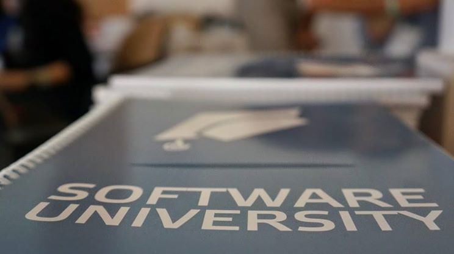

<!DOCTYPE html>
<html>
    <head>
        <meta charset="UTF-8">

        <link rel="stylesheet" href="example.css">
        <link rel="stylesheet" href="bootstrap-3.3.2-dist/css/bootstrap-theme.css">
        <link rel="stylesheet" href="bootstrap-3.3.2-dist/css/bootstrap-theme.min.css" />
        <link rel="stylesheet" href="bootstrap-3.3.2-dist/css/bootstrap.css" />
        <link rel="stylesheet" href="bootstrap-3.3.2-dist/css/bootstrap.min.css" />

        <script type="text/javascript">
            function showHide(shID) {
                if (document.getElementById(shID)) {
                    if (document.getElementById(shID + '-show').style.display != 'none') {
                        document.getElementById(shID + '-show').style.display = 'none';
                        document.getElementById(shID).style.display = 'block';
                    }
                    else {
                        document.getElementById(shID + '-show').style.display = 'inline';
                        document.getElementById(shID).style.display = 'none';
                    }
                }
            }
        </script>
        <script>
            // $('.carousel').carousel({
            // 			interval: 3000
            // 			});
            $('.carousel').carousel({
                pause: "false"
            });</script>
        <script type="text/javascript">
            $('a[href=#top]').click(function() {
                $('html, body').animate({scrollTop: 0}, 'slow');
            });</script>

    </head>
    <body>


        <section class="newsh">
            <article>
                <div class="header-art"></div>
                <div class="figure-art"></div>
                <div class="text-art"></div>
            </article>


            <!--
                        <article>
                            
                            <header>
                                
                                <a href="#"><h2>Нов безплатен курс по "Основи на програмирането" започва от 28 март</h2></a>
                                <time datetime="2014-12-11T00:36:44+00:00">December 11, 2014</time>
                            </header>
                            
                            <figure><a href="#"></a></figure>
                            
                            <div class="article-text">
                            <p> Вече е активно кандидатстването за нов безплатен подготвителен курс по 
                                "Основи на програмирането" в СофтУни (ниво #0). Всички желаещи могат да
                                кандидатстват до 24 март 23:59 ч., и ще започнат обучението си с програмния
                                зик C# от 28 март. Кандидатите могат да изберат дали да се обучават в присъствена
                                или онлайн форма. Подготвителният курс ще се провежда два пъти седмично - всяка 
                                събота и всеки вторник следобед. По време на подготвителното си обучение, кандидат-студентите 
                                ще се научат на фундаментите в програмирането, като включените теми са Математика за 
                                програмисти, Въведение в програмирането, Примитивни типове данни и променливи, 
                                Оператори и изрази, Вход и изход от конзолата, Условни конструкции, Цикли, C# за
                                напреднали. Курсът ще приключи на 18 април, а приемният изпит ще се състои на 25 
                                април. Всички, които успешно вземат изпита, могат да станат наши студенти и да 
                                започнат ниво #1 от 4 май 2015 г.                        
                                <a href="#" id="example-show" class="showLink" onclick="showHide('example');
                                        return false;">Още..</a>
                                <span id="example" class="more">Всички желаещи могат да кандидатстват до 24 март 23:59 ч., и ще започнат обучението си с програмния зик C# от 28 март. Кандидатите могат да изберат дали да се обучават в присъствена или онлайн форма. Подготвителният курс ще се провежда два пъти седмично - всяка събота и всеки вторник следобед. По време на подготвителното си обучение, кандидат-студентите ще се научат на фундаментите в програмирането, като включените теми са Математика за програмисти, Въведение в програмирането, Примитивни типове данни и променливи, Оператори и изрази, Вход и изход от конзолата, Условни конструкции, Цикли, C# за напреднали. Курсът ще приключи на 18 април, а приемният изпит ще се състои на 25 април. Всички, които успешно вземат изпита, могат да станат наши студенти и да започнат ниво #1 от 4 май 2015 г.
                                    <a href="#" id="example-hide" class="hideLink" onclick="showHide('example');
                                            return false;">Скрий</a>
                                </span>
                            </p>
                            </div>
                            
                        </article>
            -->
        </section>
    </body>
</html>
